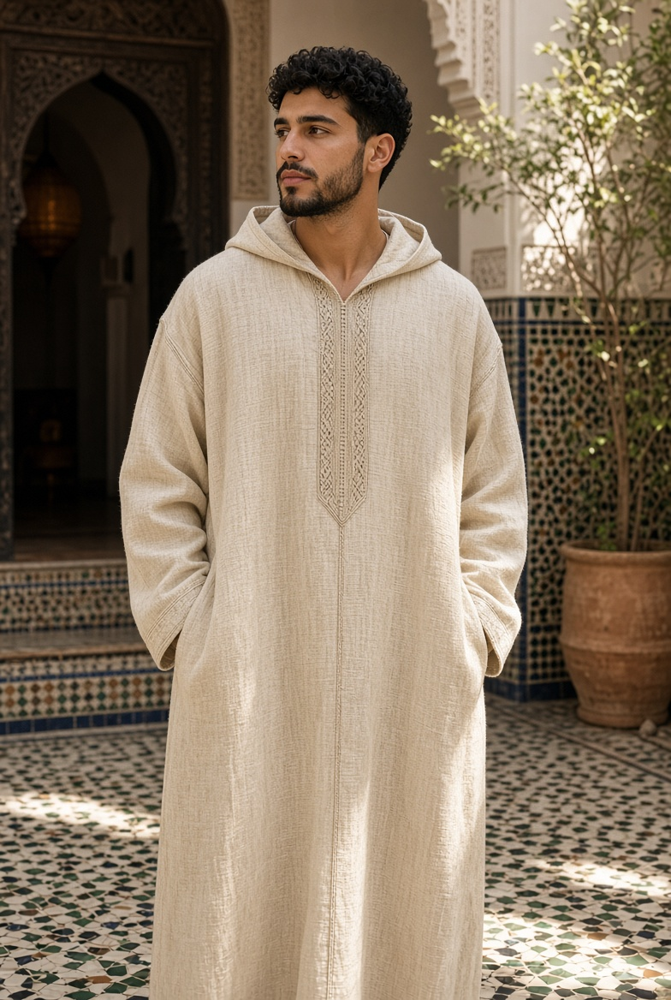
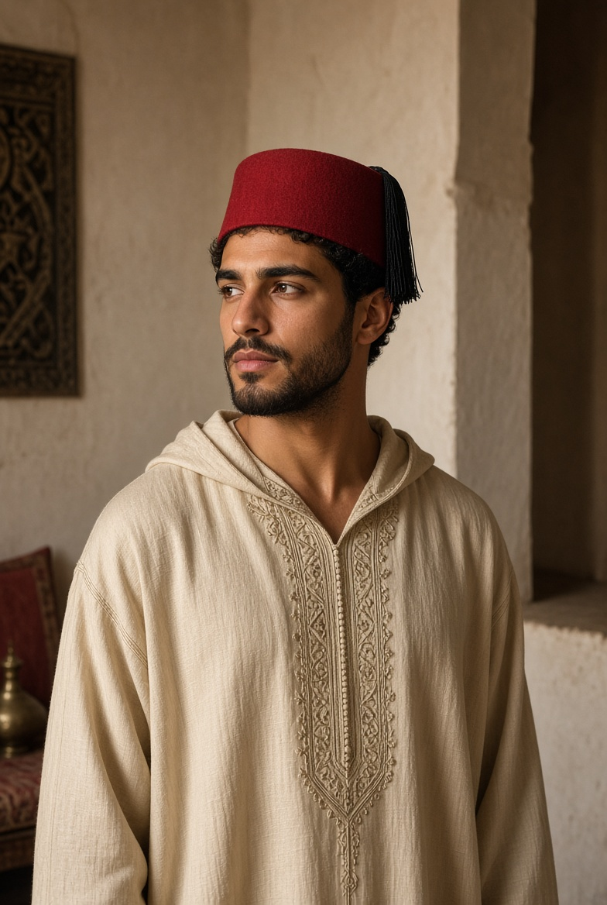
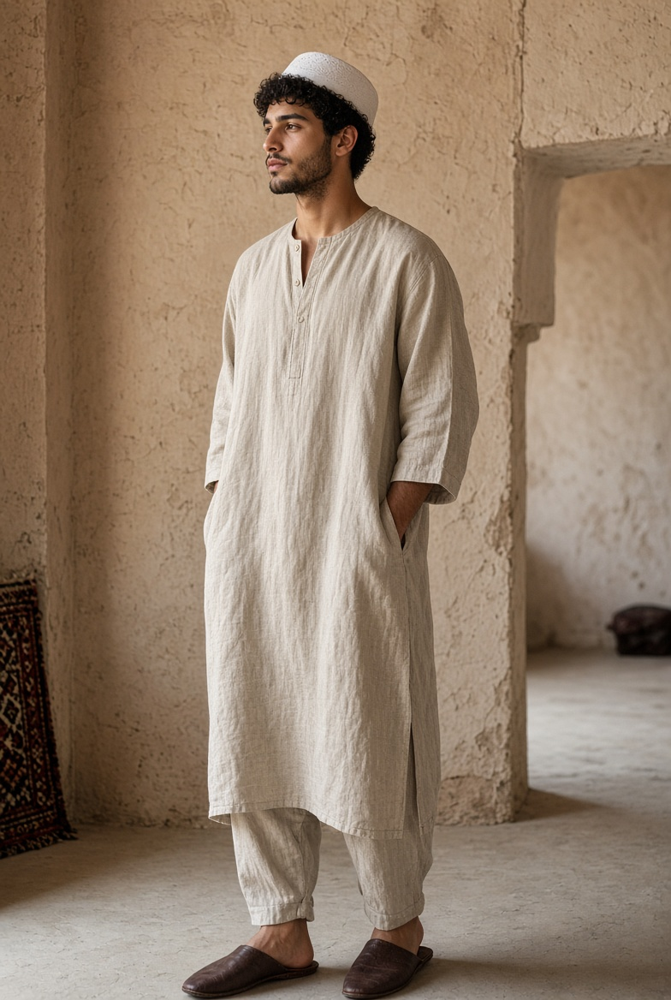
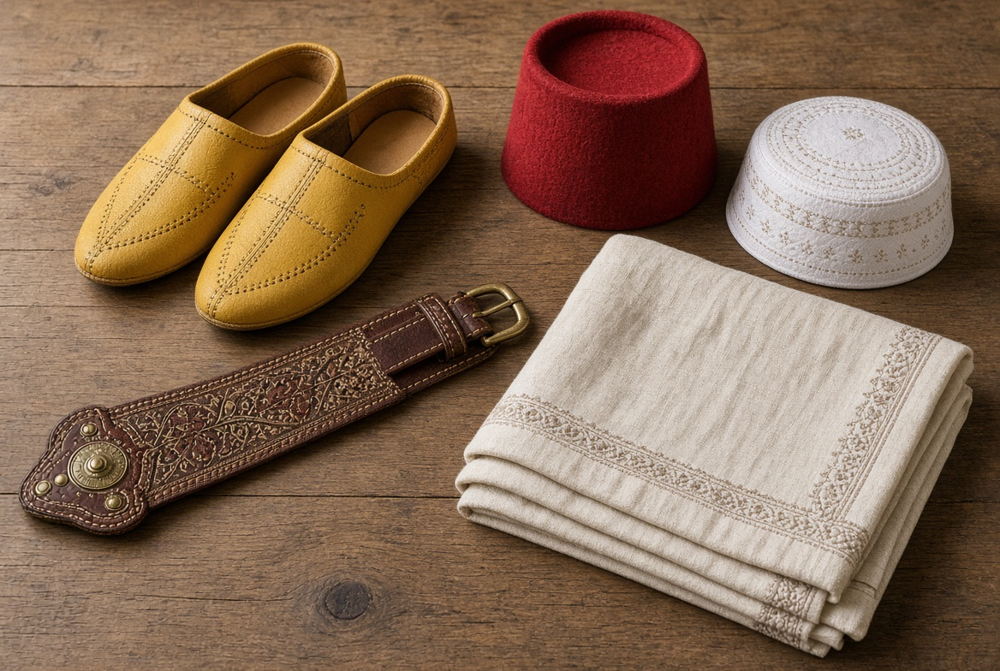
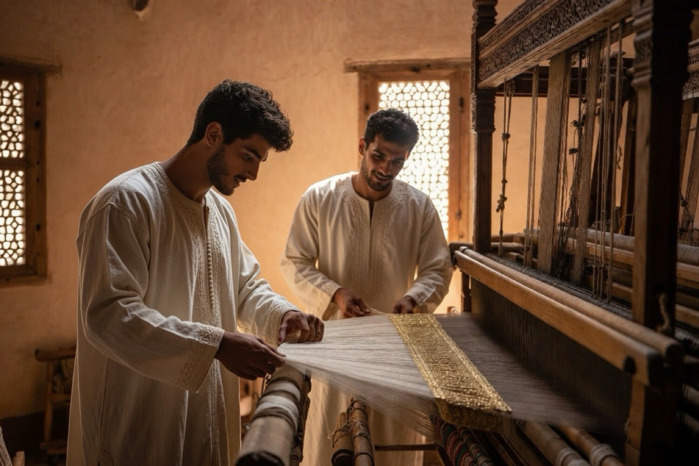
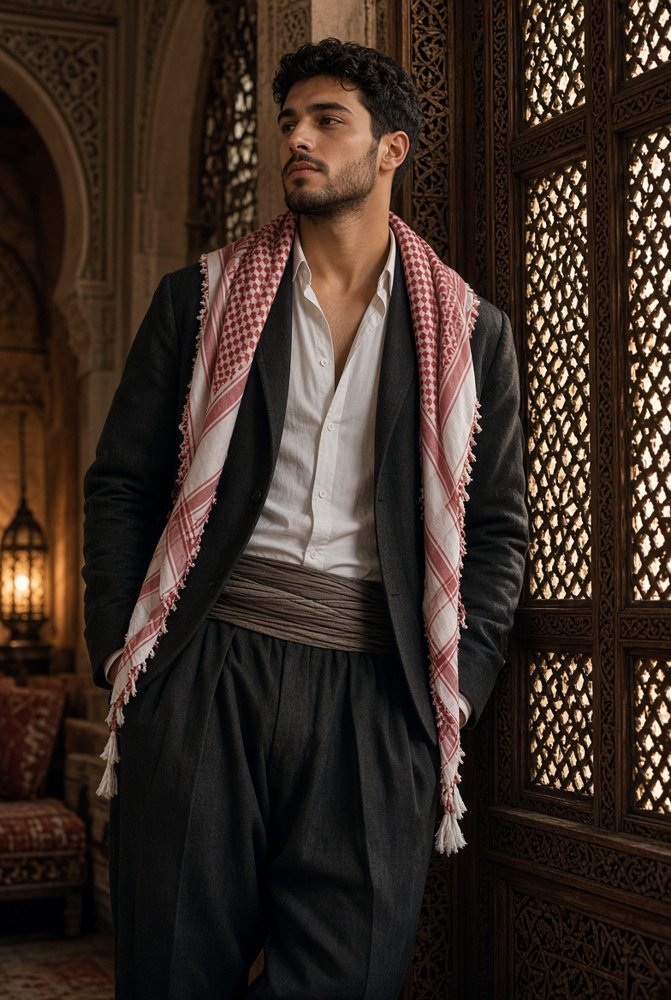

Le vêtement de l'homme
لباس الرجل
Formes, matières et noms de l'habit masculin marocain — et les lignes du Mashreq, du Golfe, de l'Empire ottoman et de la Perse.

MAGHREB
Le vestiaire marocain
المغرب

Djellaba
جلابة
ǧallāba · jellaba
Longue robe ample à capuche pointue (قب, qob). Pièce quotidienne et de sortie : coton ou lin l'été, laine l'hiver. La capuche protège du soleil et du froid. Colonne vertébrale du vestiaire masculin maghrébin.
Jabador
جبادور
ǧabādūr · jabador
Ensemble de cérémonie : tunique droite fermée par une rangée de boutons sphériques tressés à la main (عقد, ʿaqad / aakad), assortie au serwal (سروال, sirwāl). Ceinture mdama (مضمة, maḍamma). Mariages, fêtes, grandes occasions.


Qamis
قميص
qamīṣ · kamis
Tunique droite, légère, sans capuche, jusqu'aux chevilles. Coton ou satin blanc. Souvent porté avec la taqiyah. Variante d'intérieur : la gandoura (غندورة, ġandūra).
Selham
سلهام
silhām · selham
Large manteau de laine, ouvert, sans manches, à capuche. On le porte par-dessus la djellaba par temps froid ou à cheval. Signe de dignité et de protection.


Tarbouche · Fez
طربوش
ṭarbūš
Coiffe cylindrique de feutre rouge, souvent à pompon de soie noire. Héritage urbain ottoman et maghrébin.
Taqiyah · Taguia
طاقية
ṭāqiyya · taqiya · taguia · kufi
Petit copricapo rotondo, aderente al cranio. Portato dagli uomini musulmani durante la preghiera e nella vita quotidiana. In Marocco è comune la variante locale taguia. Spesso bianca, a volte ricamata. Si indossa da sola o sotto la ghutra / il tarbouche.
Sous le vêtement · La nuit
تحت اللباس · الليل
Logique de pudeur islamique — l'awra (عورة, ʿawra : pour l'homme, du nombril au genou). Couches progressives.

Maison et nuit
Pas de pyjama codifié. Gandoura ou qamis de coton fin : on se couche dans la dernière couche légère déjà portée le soir.

Couches sous la tunique
Izar (إزار) ou caleçon → serwal → qamis / gandoura → djellaba ou jabador.

Accessoires
Belgha (بلغة, balġa) — babouche de cuir, traditionnellement jaune pour les hommes.
Serwal — pantalon large. Mdama — ceinture rigide brodée.
Le maalem (معلم, muʿallim) transmet la coupe, la broderie et le geste juste.

COMPARAISON
Au-delà du Maghreb
ما وراء المغرب
Même logique de couverture et de couches, vestiaires différents. Mashreq et Golfe, monde ottoman, Perse.
Golfe · Mashreq
الخليج · المشرق

Thobe · Dishdasha · Kandura
ثوب · دشداشة · كندورة
thawb · dišdāša · kandūra
Tunique longue quotidienne, en général blanche. Ghutra / shumagh fixée par l'ʿiqāl noir.

Bisht
بشت
bišt
Manteau cérémonial, souvent bordé d'or. Mariages, prières solennelles, événements officiels.
Levant
بلاد الشام

Thawb · Keffiyeh
ثوب · كوفية
Tunique longue ; la kūfiyya est le signe le plus reconnaissable du Levant.

Keffiyeh urbaine
Portée sur les épaules, en ville : identité, tissu, protection.
Monde ottoman
العالم العثماني

Şalvar · Cepken · Fes
Şalvar — pantalons amples. Cepken / yelek — veste courte brodée. Kuşak — ceinture. Fes — le tarbouche dans sa ligne ottomane.
Pas de djellaba à qob. Le peştemal (drap de hammam) est de cette lignée, non maghrébine (où l'équivalent s'appelle plutôt fouta).
Perse · Iran
إیران · فارس
Qaba · Pirahan · Shalvar
قبا · پیرهن · شلوار
qabā · pirāhan · šalvār
Le qabā est le manteau long, souvent ouvert devant, aux bords brodés. Sous : pirāhan (chemise) et šalvār. Esthétique plus structurée que la djellaba fermée.

En une ligne
| Région | Pièce-signature |
|---|---|
| Maghreb | Djellaba à qob, jabador, belgha, taqiyah |
| Golfe | Kandura + ġuṭra + ʿiqāl ; bisht |
| Levant | Thawb + kūfiyya |
| Ottoman | Şalvar + cepken + fes |
| Perse | Qabā ouvert + pirāhan |
Même ʿawra, mêmes couches de pudeur, généalogies régionales distinctes.
Le maalem reste celui qui transmet la coupe et le geste juste.